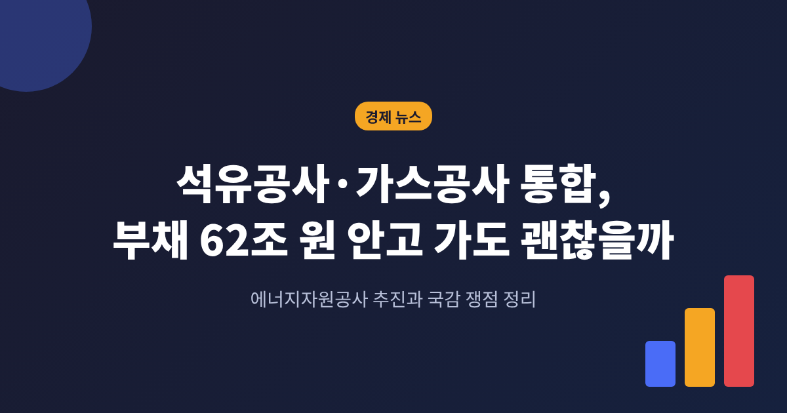
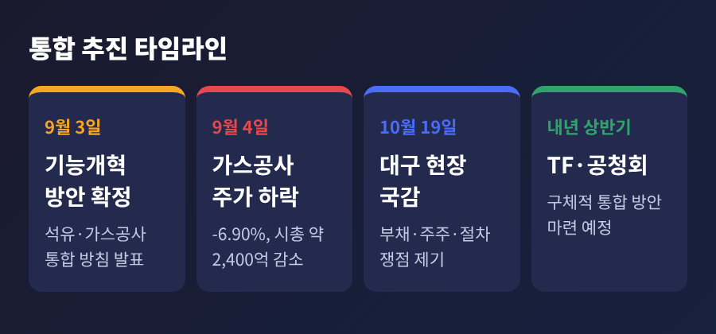
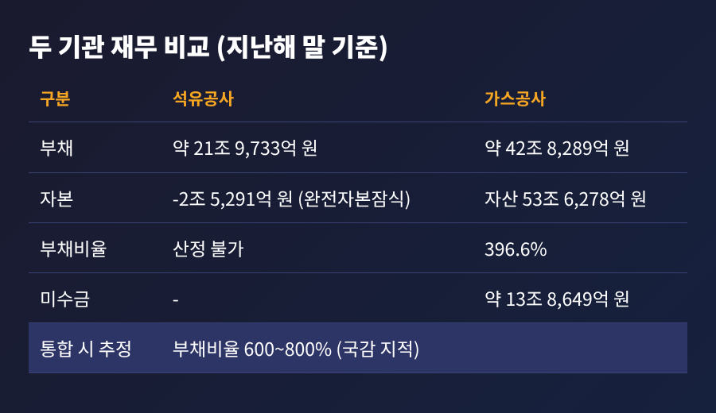
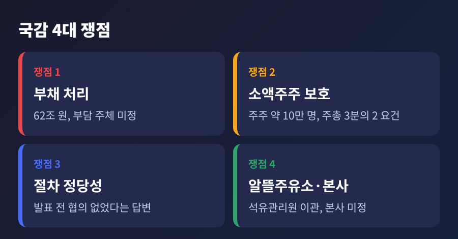
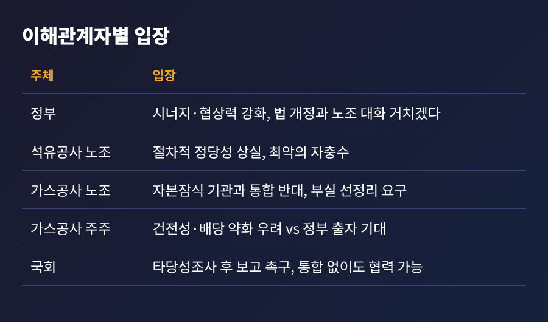
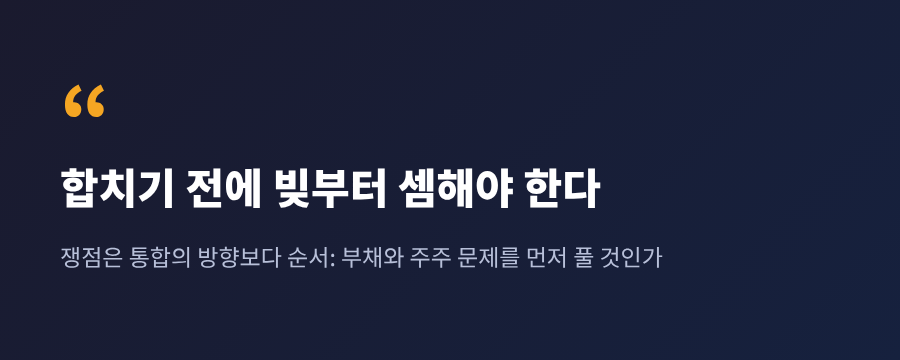

석유공사 가스공사 통합, 부채 62조 원 안고 가도 괜찮을까

3줄 요약
- 정부는 9월 3일 한국석유공사와 한국가스공사를 '에너지자원공사'로 합치겠다고 밝혔고, 10월 19일 국정감사에서 부채와 주주 보호 문제가 정면으로 제기됐습니다.
- 두 기관의 부채는 합쳐 약 62조 원이며, 통합 시 부채비율이 600~800%까지 오를 수 있다는 지적이 나왔습니다.
- 정부는 내년 상반기까지 TF와 공청회를 거치겠다는 입장이고, 부채 처리 방식과 소액주주 보호가 핵심 변수입니다.
이번 글에서는 석유공사·가스공사 통합 논란을 정리해 보겠습니다. 10월 19일 국정감사에서 무엇이 오갔는지, 숫자는 어떻게 읽어야 하는지, 앞으로 무엇을 지켜봐야 하는지 순서대로 살펴봅니다.
■ 무슨 일이 있었나
정부는 2026년 9월 3일 공공기관운영위원회에서 '공공기관 기능개혁 방안'을 확정했습니다. 이 안에 한국석유공사와 한국가스공사를 가칭 '에너지자원공사'로 통합한다는 내용이 들어 있었습니다. 석유와 가스의 도입·비축 전략을 한 기관에서 운용해 중복 투자를 줄이고, 산유국과의 협상력을 높이겠다는 구상입니다.
같은 방안에는 수도권 공공기관 최대 350개의 2차 지방 이전과 109개 기관 통폐합도 포함됐습니다. 에너지 공기업 통합은 그 가운데 규모가 큰 사안으로 꼽힙니다.
논의가 본격화된 것은 10월 19일입니다. 국회 산업통상자원중소벤처기업위원회가 대구 가스공사 본사에서 현장 국정감사를 열었습니다. 여기서 부채, 주주, 절차를 둘러싼 질문이 한꺼번에 나왔습니다.

■ 왜 중요한가: 62조 원이라는 숫자
가장 눈에 띄는 숫자는 부채입니다. 국감에서 김종민 의원은 두 기관의 부채를 약 62조 원으로 제시했습니다. 석유공사가 약 22조 원, 가스공사가 약 40조 원입니다. 가스공사에는 이와 별도로 도시가스 원료비 미수금이 14조 원 넘게 쌓여 있습니다.
지난해 말 기준으로 보면 사정이 더 선명합니다. 노컷뉴스가 정리한 수치에서 석유공사는 자산 19조4,442억 원, 부채 21조9,733억 원, 자본 마이너스 2조5,291억 원입니다. 2020년부터 완전자본잠식 상태입니다. 가스공사는 자산 53조6,278억 원, 부채 42조8,289억 원, 부채비율 396.6%였습니다.
두 곳을 단순 합산하면 부채는 약 64조8천억 원, 부채비율은 780%를 웃돕니다. 김 의원은 통합 시 부채비율이 600~800%에 이를 수 있다고 경고했습니다. 올해 상반기 기준으로 추정한 보도에서는 378%에서 658%로 오른다고 봤습니다.
숫자가 조금씩 다른 이유는 기준 시점과 계산 방식이 다르기 때문입니다. 석유공사 부채만 해도 연결 기준 약 22조 원이라는 수치와, 별도재무제표 기준 약 18조6,527억 원이라는 수치가 함께 쓰이고 있습니다. 어느 것도 정부가 확정한 통합 재무제표가 아니라는 점은 분명히 해 둘 필요가 있습니다. 내부거래를 제거하면 실제 수치는 달라질 수 있습니다.

■ 배경: 왜 하필 이 두 곳인가
정부의 논리는 단순합니다. 석유와 가스는 에너지 안보라는 같은 뿌리에서 나온 기능이니 합치면 시너지가 난다는 것입니다. 도입과 비축을 한곳에서 관리하면 협상 때 힘이 실린다고 설명합니다.
석유공사는 15개국에서 31개 사업을 수행하고 하루 약 12만7천 배럴을 생산합니다. 확보 매장량은 약 9억 배럴, 국내 비축량은 약 1억 배럴입니다. 가스공사는 상장사로서 천연가스 도입과 도매 공급을 맡고 있습니다.
그러나 석유공사의 재무 상황에는 오래된 상처가 있습니다. 2009년 인수한 캐나다 하베스트 사업에는 약 9조 원이 투입됐지만, 회수액은 517억 원에 그쳤습니다. 자본잠식은 지난 1년 새에만 약 1조2천억 원 늘었고, 재정 당국의 중장기 계획에서도 2030년까지 이어질 전망입니다.
한편 에너지 비용 환경도 녹록지 않습니다. 한전 통계 분석에 따르면 8월 석탄 발전의 전력구입 단가는 kWh당 165.09원으로 한 달 새 8.8% 올랐고, LNG는 222.49원으로 10.8% 올랐습니다. 한전의 연결 부채는 6월 말 210조 원을 넘었고, 김동철 사장은 "최소한의 전기요금 인상"이 필요하다는 입장입니다. 에너지 공기업의 재무 부담이 한꺼번에 불거지는 시점에 통합 논의가 겹친 셈입니다.
■ 국감에서 드러난 쟁점 네 가지
첫째, 부채를 어떻게 처리할 것인가. 김 의원은 "부채를 해결하지 못하면 통합할 이유가 없다"는 취지로 말하며, 타당성조사를 먼저 하고 결과를 국회에 보고하라고 촉구했습니다. 석유공사의 부실자산과 부채 일부를 별도 자회사로 넘겨 매각·청산하는 방안이 거론되지만, 누가 부담을 질지는 정해지지 않았습니다. 장부 밖으로 옮겨도 정부 출자나 차입금 상환 과정에서 재정 부담으로 돌아올 수 있다는 지적이 있습니다.
둘째, 소액주주 보호입니다. 가스공사는 상장사입니다. 정부 관련 지분이 약 60%, 외국인과 개인이 약 40%이고, 소액주주는 약 10만 명으로 보도됐습니다. 통합 발표 직후인 9월 4일 가스공사 주가는 6.90% 떨어졌고, 시가총액은 하루 만에 약 2,400억 원 줄었습니다. 김 의원은 소송 가능성과 상법상 이사의 충실의무, 주주총회 3분의 2 의결 요건을 어떻게 충족할지 따져 물었습니다. 홍의락 가스공사 사장은 기존 주주 가치가 훼손되어서는 안 된다고 답했습니다.
셋째, 절차의 정당성입니다. 홍 사장은 발표 전에 정부로부터 협의 요청을 받은 적이 없다고 했습니다. 시너지 계획도 아직 제시되지 않았다고 했습니다. 손주석 석유공사 사장은 발표 당일 아침 산업부 고위 관계자와 통화했고, 9월 9일 회의에 참석했다고 밝혔습니다. 다만 부채와 알뜰주유소 문제는 로드맵에 달려 있어 구체적으로 답하기 어렵다고 했습니다. 박성민 의원은 통합 효과를 입증할 용역이나 데이터가 없다고 비판하면서, 공동구매·공동협상·공동투자는 통합 없이도 가능하다고 짚었습니다.
넷째, 알뜰주유소와 본사 문제입니다. 석유공사의 알뜰주유소 사업을 품질검사와 가짜석유 단속을 맡는 석유관리원으로 넘기는 안을 두고, 김 의원은 규제 기관에 유통 진흥 업무를 얹는 것이 맞지 않고 인력도 함께 넘어가지 않는다고 지적했습니다. 본사도 정해지지 않았습니다. 지금은 가스공사가 대구, 석유공사가 울산에 있습니다. 오승철 산업통상부 기획조정실장은 로드맵이 나오지 않았고 위치도 정부 내에서 결정되지 않았다고 밝혔습니다.

■ 이해관계자는 어떻게 갈리나
정부는 시너지와 협상력을 앞세웁니다. 허장 재정경제부 2차관은 법률 개정과 노조 대화를 거치겠다고 했고, 고용승계와 처우 보장 같은 지원책도 함께 내놨습니다. 가스공사를 존속법인으로 두고 석유공사를 흡수하는 방식이 거론되는데, 이 경우 일반 합병 절차에 따라 주주총회 승인과 반대 주주의 주식매수청구권 절차를 거쳐야 합니다.
노조는 강하게 반대합니다. 석유공사 노조는 이번 안을 "국가 에너지 생태계를 파괴하는 최악의 자충수"라고 표현했고, 직원 의견 수렴이 없었다고 비판했습니다. 가스공사 노조는 자본잠식 기관과의 통합에 반대하면서, 부채가 늘면 프로젝트 자금 조달이 어려워지고 금리가 올라 국제 협상력이 오히려 약해질 수 있다고 우려합니다. 10월 19일에는 가스공사 본사 앞에서 집회도 열렸습니다.
주주 쪽 시각은 나뉩니다. 석유공사의 재무 부담이 넘어오면 가스공사의 건전성과 배당 여력이 약해질 수 있다는 우려가 있습니다. 반대로 정부가 최대주주인 만큼 출자나 부채 조정으로 재무를 안정시킬 것이라는 기대도 있습니다. 결국 자본 구조를 어떻게 설계하느냐에 평가가 갈릴 전망입니다.
정치 환경도 변수입니다. 같은 방안으로 발표된 지방 이전은 1차 때 16년이 걸렸습니다. 대통령 지지율은 4월 67%에서 9월 30%대로 내려앉았고, 임기 내 완료가 어렵다는 전문가 의견이 있습니다.

■ 전망: 앞으로 무엇을 봐야 하나
정부 일정은 내년 상반기까지 TF 구성, 공청회, 의견 수렴입니다. 통합의 법적 방식과 시기, 부채 분리 방안, 비용 절감 효과는 아직 확인된 것이 없습니다. 구체안이 나오기 전까지는 지금의 숫자가 모두 추정이라는 점을 염두에 두셔야 합니다.
지켜볼 대목은 셋입니다. 첫째, 타당성조사를 국회에 먼저 보고하느냐입니다. 둘째, 석유공사 부채를 누가, 어떤 형태로 떠안느냐입니다. 셋째, 소액주주 보호 장치가 법에 담기느냐입니다. 이 세 가지에 따라 통합은 '에너지 안보 강화'로도, '부실 공기업 합치기'로도 평가될 수 있습니다.
좋은 점도 분명 있습니다. 도입과 비축을 함께 설계하면 협상력이 높아질 여지가 있고, 중복 기능을 정리하면 비용을 줄일 가능성도 있습니다. 다만 그 효과를 뒷받침할 용역이나 데이터는 국감 시점까지 제시되지 않았습니다. 아직 완결된 계획이라고 보기는 어렵습니다.
정리하면 이렇습니다. 통합 자체의 방향보다 순서가 쟁점입니다. 부채와 주주 문제를 풀고 합치느냐, 합친 뒤에 풀겠다는 것이냐의 차이입니다.

62조 원이라는 숫자가 내년 상반기 공청회장에서 어떤 설명을 얻게 될지, 차분히 지켜볼 일입니다.
본 글은 공개된 보도를 바탕으로 한 뉴스 해설이며, 특정 종목의 매수·매도를 권유하는 투자 권유가 아닙니다. 투자 판단과 그 결과의 책임은 투자자 본인에게 있습니다.